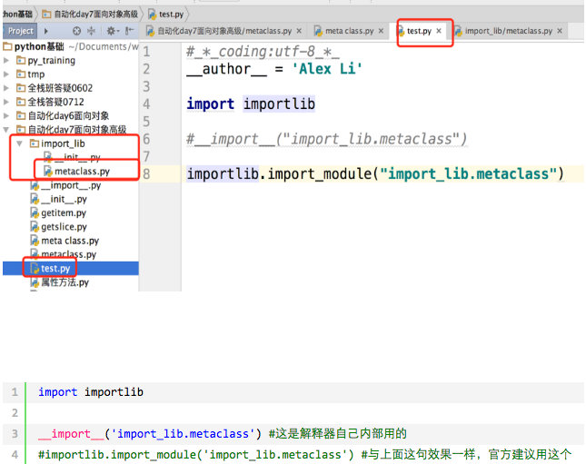
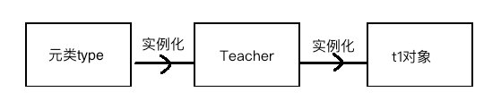
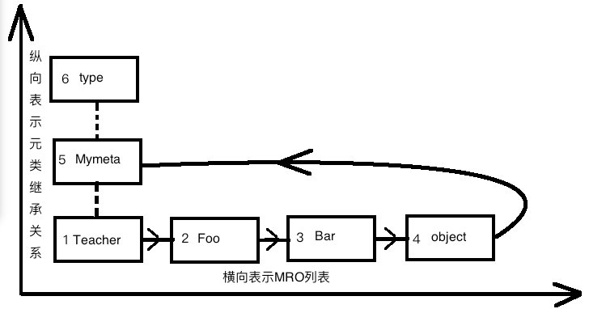

首先明确:类中存在一些名字带有__(双下滑线)开头的内置函数,这些函数会在某些时候被自动调用,例如之前学习的迭代器,__next__函数
检查是否obj是否是类 cls 的对象
class Foo(object):
pass
obj = Foo()
isinstance(obj, Foo)检查sub类是否是 super 类的派生类
class Foo(object):
pass
class Bar(Foo):
pass
issubclass(Bar, Foo)__setattr__
使用点语法添加/修改属性会触发它的执行
__delattr__
使用点语法删除属性的时候会触发
__getattr__
使用点语法调用属性且属性不存在的时候才会触发
__getattribute__
使用点语法调用属性的时候触发,无论属性是否存在都会执行
注意:当__getattribute__与__getattr__同时存在时,仅执行__getattribute__
class Foo:
x=1
def __init__(self,y):
self.y=y
def __getattr__(self, item):
print('----> from getattr:你找的属性不存在')
def __setattr__(self, key, value):
print('----> from setattr')
# self.key=value #这就无限递归了,你好好想想
# self.__dict__[key]=value #应该使用它
def __delattr__(self, item):
print('----> from delattr')
# del self.item #无限递归了
self.__dict__.pop(item)
#__setattr__添加/修改属性会触发它的执行
f1=Foo(10)
print(f1.__dict__) # 因为你重写了__setattr__,凡是赋值操作都会触发它的运行,你啥都没写,就是根本没赋值,除非你直接操作属性字典,否则永远无法赋值
f1.z=3
print(f1.__dict__)
#__delattr__删除属性的时候会触发
f1.__dict__['a']=3#我们可以直接修改属性字典,来完成添加/修改属性的操作
del f1.a
print(f1.__dict__)
#__getattr__只有在使用点调用属性且属性不存在的时候才会触发
f1.xxxxxx
#三者的用法演示__setitem__
使用key的形式添加/修改属性时触发
__getitem__
使用key的形式获取属性时触发
__delitem__
使用key的形式删除属性时触发
class Foo:
def __init__(self,name):
self.name=name
def __getitem__(self, item):
print(self.__dict__[item])
def __setitem__(self, key, value):
self.__dict__[key]=value
def __delitem__(self, key):
print('del obj[key]时,我执行')
self.__dict__.pop(key)
def __delattr__(self, item):
print('del obj.key时,我执行')
self.__dict__.pop(item)
f1=Foo('sb')
f1['age']=18
f1['age1']=19
del f1.age1
del f1['age']
f1['name']='alex'
print(f1.__dict__)描述符本质就是一个类,在这个新式类中,至少实现了__get__(),__set__(),__delete__()中的一个,
也被称为描述符协议
__get__():调用一个属性时,触发
__set__():为一个属性赋值时,触发
__delete__():采用del删除属性时,触发
描述符的作用是用来代理另外一个类的属性的(必须把描述符定义成这个类的类属性，不能定义到构造函数中),python底层的很多特性都是使用描述符来完成的,例如实例方法,classmethod,staticmethod等等!
简单的说:描述符可以检测到一个属性的访问和修改,从而对这些操作增加额外的功能逻辑;
#描述符Str
class Str:
def __get__(self, instance, owner):
print('Str调用')
def __set__(self, instance, value):
print('Str设置...')
def __delete__(self, instance):
print('Str删除...')
#描述符Int
class Int:
def __get__(self, instance, owner):
print('Int调用')
def __set__(self, instance, value):
print('Int设置...')
def __delete__(self, instance):
print('Int删除...')
class People:
name=Str()
age=Int()
def __init__(self,name,age): #name被Str类代理,age被Int类代理,
self.name=name
self.age=age
#何地？：定义成另外一个类的类属性
#何时？：且看下列演示
p1=People('alex',18)
#描述符Str的使用
p1.name
p1.name='egon'
del p1.name
#描述符Int的使用
p1.age
p1.age=18
del p1.age
#我们来瞅瞅到底发生了什么
print(p1.__dict__)
print(People.__dict__)
#补充
print(type(p1) == People) #type(obj)其实是查看obj是由哪个类实例化来的
print(type(p1).__dict__ == People.__dict__)
# 描述符应用 以及执行时机1.数据描述符
至少实现了__get__()和__set__()两个方法
class Foo:
def __set__(self, instance, value):
print('set')
def __get__(self, instance, owner):
print('get')2.非数据描述符
没有实现__set__()方法
class Foo:
def __get__(self, instance, owner):
print('get')一 描述符本身应该定义成新式类,被代理的类也应该是新式类
二 必须把描述符定义成这个类的类属性，不能为定义到构造函数中
三 要严格遵循该优先级,优先级由高到底分别是
1.类属性
2.数据描述符
3.实例属性
4.非数据描述符
5.找不到的属性触发__getattr__()
描述符是可以实现大部分python类特性中的底层魔法,包括@classmethod,@staticmethd,@property甚至是__slots__属性
描述父是很多高级库和框架的重要工具之一,描述符通常是使用到装饰器或者元类的大型框架中的一个组件.
案列1:利用描述符原理完成一个自定制@property,实现延迟计算（本质就是把一个函数属性利用装饰器原理做成一个描述符：类的属性字典中函数名为key，value为描述符类产生的对象）
class Lazyproperty:
def __init__(self,func):
self.func=func
def __get__(self, instance, owner):
print('这是我们自己定制的静态属性,r1.area实际是要执行r1.area()')
if instance is None:
return self
else:
print('--->')
value=self.func(instance)
setattr(instance,self.func.__name__,value) #计算一次就缓存到实例的属性字典中
return value
class Room:
def __init__(self,name,width,length):
self.name=name
self.width=width
self.length=length
@Lazyproperty #area=Lazyproperty(area) 相当于'定义了一个类属性,即描述符'
def area(self):
return self.width * self.length
r1=Room('alex',1,1)
print(r1.area) #先从自己的属性字典找,没有再去类的中找,然后出发了area的__get__方法
print(r1.area) #先从自己的属性字典找,找到了,是上次计算的结果,这样就不用每执行一次都去计算
实现延迟计算功能案例2: 利用描述符原理完成一个自定制@classmethod
class ClassMethod:
def __init__(self,func):
self.func=func
def __get__(self, instance, owner): #类来调用,instance为None,owner为类本身,实例来调用,instance为实例,owner为类本身,
def feedback():
print('在这里可以加功能啊...')
return self.func(owner)
return feedback
class People:
name='linhaifeng'
@ClassMethod # say_hi=ClassMethod(say_hi)
def say_hi(cls):
print('你好啊,帅哥 %s' %cls.name)
People.say_hi()
p1=People()
p1.say_hi()
#疑问,类方法如果有参数呢,好说,好说
class ClassMethod:
def __init__(self,func):
self.func=func
def __get__(self, instance, owner): #类来调用,instance为None,owner为类本身,实例来调用,instance为实例,owner为类本身,
def feedback(*args,**kwargs):
print('在这里可以加功能啊...')
return self.func(owner,*args,**kwargs)
return feedback
class People:
name='linhaifeng'
@ClassMethod # say_hi=ClassMethod(say_hi)
def say_hi(cls,msg):
print('你好啊,帅哥 %s %s' %(cls.name,msg))
People.say_hi('你是那偷心的贼')
p1=People()
p1.say_hi('你是那偷心的贼')
自己做一个@classmethod案例3:利用描述符原理完成一个自定制的@staticmethod
class StaticMethod:
def __init__(self,func):
self.func=func
def __get__(self, instance, owner): #类来调用,instance为None,owner为类本身,实例来调用,instance为实例,owner为类本身,
def feedback(*args,**kwargs):
print('在这里可以加功能啊...')
return self.func(*args,**kwargs)
return feedback
class People:
@StaticMethod# say_hi=StaticMethod(say_hi)
def say_hi(x,y,z):
print('------>',x,y,z)
People.say_hi(1,2,3)
p1=People()
p1.say_hi(4,5,6)
自己做一个@staticmethod一个静态属性property本质就是实现了get，set，delete三种方法
#用法1
class Foo:
@property
def AAA(self):
print('get的时候运行我啊')
@AAA.setter
def AAA(self,value):
print('set的时候运行我啊')
@AAA.deleter
def AAA(self):
print('delete的时候运行我啊')
#只有在属性AAA定义property后才能定义AAA.setter,AAA.deleter
f1=Foo()
f1.AAA
f1.AAA='aaa'
del f1.AAA
#==============================================用法二
class Foo:
def get_AAA(self):
print('get的时候运行我啊')
def set_AAA(self,value):
print('set的时候运行我啊')
def delete_AAA(self):
print('delete的时候运行我啊')
AAA=property(get_AAA,set_AAA,delete_AAA) #内置property三个参数与get,set,delete一一对应
f1=Foo()
f1.AAA
f1.AAA='aaa'
del f1.AAA
用法二__str__
调用str函数或者print函数时自动执行,返回值作为显示内容
__repr__
调用repr或者交互式解释器输出对象是自动执行,返回值作为显示内容
注意:如果`__str__`没有被定义,那么就会使用`__repr__`来代替输出
这俩方法的返回值必须是字符串,否则抛出异常
__format__
调用format函数时自动执行,用于定制对象的格式化输出,
format使用案例:
#{0.year}:{0.month}:{0.day} 这是一个格式化字符串 ,想到于"%s:%s:%s" year表示取对象的year属性值
date_dic={
'ymd':'{0.year}:{0.month}:{0.day}',
'dmy':'{0.day}/{0.month}/{0.year}',
'mdy':'{0.month}-{0.day}-{0.year}',
}
class Date:
def __init__(self,year,month,day):
self.year=year
self.month=month
self.day=day
def __format__(self, format_spec):
if not format_spec or format_spec not in date_dic:
format_spec='ymd'
fmt=date_dic[format_spec]
return fmt.format(self)
d1=Date(2016,12,29)
print(format(d1))
print('{:mdy}'.format(d1))
__slots__1.__slots__是什么:
是一个类变量,变量值可以是列表,元祖,或者可迭代对象,也可以是一个字符串(意味着所有实例只有一个数据属性)
2.引子:
使用点来访问属性本质就是在访问类或者对象的__dict__属性字典(类的字典是共享的,而每个实例的是独立的 需要给每一个实例创建一个字典)
3.为何使用__slots__:
字典会占用大量内存,如果你有一个属性很少的类,但是有很多实例,为了节省内存可以使用__slots__取代实例的__dict__
当你定义__slots__后,__slots__就会为实例使用一种更加紧凑的内部表示,实例通过一个很小的固定大小的数组来构建,而不是为每个实例定义一个字典,这跟元组或列表很类似。
在__slots__中列出的属性名在内部被映射到这个数组的指定下标上。
使用__slots__一个不好的地方就是我们不能再给实例添加新的属性了,只能使用在__slots__中定义的那些属性名。4.注意事项:
__slots__的很多特性都依赖于普通的基于字典的实现。另外,定义了__slots__后的类不再 支持一些普通类特性了,比如多继承。大多数情况下,你应该 __slots__的很多特性都依赖于普通的基于字典的实现。另外,定义了__slots__后的类不再 支持一些普通类特性了,比如多继承。大多数情况下,你应该只在那些经常被使用到 的用作数据结构的类上定义__slots__比如在程序中需要创建某个类的几百万个实例对象 。 关于__slots__的一个常见误区是它可以作为一个封装工具来防止用户给实例增加新的属性。尽管使用__slots__可以达到这样的目的,但是这个并不是它的初衷。更多的是用来作为一个内存优化工具。
案例:
class Foo:
__slots__=['name','age']
f1=Foo()
f1.name='alex'
f1.age=18
print(f1.__slots__)
#f1.y=2 报错
print(f1.__slots__) #f1不再有__dict__
f2=Foo()
f2.name='egon'
f2.age=19
print(f2.__slots__)
print(Foo.__dict__)
#f1与f2都没有属性字典__dict__了,统一归__slots__管,节省内存__next__和__iter__关于迭代器之前已经详细的探讨过
这里简单回顾一下:
class Foo:
def __init__(self,start,stop):
self.num=start
self.stop=stop
def __iter__(self):
return self
def __next__(self):
if self.num >= self.stop:
raise StopIteration
n=self.num
self.num+=1
return n
f=Foo(1,5)
from collections import Iterable,Iterator
print(isinstance(f,Iterator))
for i in Foo(1,5):
print(i)__doc__这是一个隐藏属性,用于获取类的帮助文档,其实就是类下面的多行注释
class Foo:
'我是描述信息'
pass
class Bar(Foo):
pass
print(Foo.__doc__)
#输出 我是描述
print(Bar.__doc__) #该属性无法继承给子类
#输出 None需要注意的是,该属性不会被继承
__module__和__class____module__ 表示当前操作的对象在那个模块
__class__ 表示当前操作的对象的类是什么
class C:
def __init__(self):
self.name = 'SB'
#该类位于lib/aa.py文件中在另一个文件中:
from lib.aa import C
obj = C()
print obj.__module__ # 输出 lib.aa，即：输出模块
print obj.__class__ # 输出 lib.aa.C，即：输出类__del__析构方法析构看做构建的反义词,构建指一个东西从无到有,析构指一个东西从有到无
析构方法的特点是: 当对象在内存中被释放时，会自动触发执行。
如果产生的对象仅仅只是python程序级别的（用户级），那么无需定义__del__,因为python会自动完成所有资源的回收;
如果产生的对象的同时还会向操作系统发起系统调用，即一个对象有用户级与内核级两种资源，比如（打开一个文件，创建一个数据库链接），则必须在清除对象的同时回收系统资源，这就用到了__del__
class Foo:
def __del__(self):
print('执行我啦')
f1=Foo()
del f1
print('------->')
#输出 执行我啦
#输出 ------->class Foo:
def __del__(self):
print('执行我啦')
f1=Foo()
# del f1
print('------->')
#输出 ------->
#输出 执行我啦你会发现就算不去调用del方法一样会出发执行__del__,这是因为你python解释器在程序运行结束时必须将所有资源全部释放,当然包括创建的f1对象;
创建数据库类，用该类实例化出数据库链接对象，对象本身是存放于用户空间内存中，而链接则是由操作系统管理的，存放于内核空间内存中
当程序结束时，python只会回收自己的内存空间，即用户态内存，而操作系统的资源则没有被回收，这就需要我们定制__del__，在对象被删除前向操作系统发起关闭数据库链接的系统调用，回收资源
这与文件处理是一个道理：
f=open('a.txt') #做了两件事，在用户空间拿到一个f变量，在操作系统内核空间打开一个文件
del f #只回收用户空间的f，操作系统的文件还处于打开状态
#所以我们应该在del f之前保证f.close()执行,即便是没有del，程序执行完毕也会自动del清理资源，于是文件操作的正确用法应该是
f=open('a.txt')
#读写...
f.close()
#很多情况下大家都容易忽略f.close,这就用到了with上下文管理__enter__和__exit__上下文指的是一种语境,属于语言科学,说起来很抽象,其实你已经在很多地方使用到他了,来看一个实例:
with open('a.txt') as f:
print(f.read())在这个代码中python解释器分析出你的代码想要做的事情,然后在结束的时候自动帮你将资源释放了,with中的所有代码都在一个上下文中,你可以把他理解为一个代码范围
上面的例子可以看出不使用上下文管理完没有问题,需要程序员,在合适的位置编写代码来关闭文件资源,这其实是一种体力活完全没有技术含量;
所以使用上下文可以省略掉一些重复代码的编写工作,同时避免了一些粗心的程序员忘记做一些清理工作;
该协议包含两个方法
__enter__ 出现with语句,对象的__enter__被触发,有返回值则赋值给as声明的变量
__exit__ with中代码块执行完毕时执行
只要这个一个类实现了这两个方法就可以被with 语句使用
案例: 模拟opne
class Open:
def __init__(self,filepath,mode='r',encoding='utf-8'):
self.filepath=filepath
self.mode=mode
self.encoding=encoding
def __enter__(self):
# print('enter')
self.f=open(self.filepath,mode=self.mode,encoding=self.encoding)
return self.f
def __exit__(self, exc_type, exc_val, exc_tb):
# print('exit')
self.f.close()
return True
def __getattr__(self, item):
return getattr(self.f,item)
with Open('a.txt','w') as f:
print(f)
f.write('aaaaaa')
f.wasdf #抛出异常，交给__exit__处理需要注意的是:
1.__exit__()中的三个参数分别代表异常类型，异常值和追溯信息
2.with语句中代码块出现异常时,会立即触发方法__exit__的执行,并将异常信息错误参数传入
3.with语句中代码块未出现异常正常结束时也会触发方法__exit__的执行,此时参数中的异常信息为空
4.如果__exit__()返回值为True,那么异常会被清空，就好像啥都没发生一样，with后的语句正常执行
总结:
1.使用with语句的目的就是把代码块放入with中执行，with结束后，自动完成清理工作，无须手动干预
2.在需要管理一些资源比如文件，网络连接和锁的编程环境中，可以在__exit__中定制自动释放资源的机制，你无须再去关系这个问题，这将大有用处
__call____call__是一个函数,在对象被调用时执行,调用就是加括号()
注：构造方法的执行是由创建对象触发的，即：对象 = 类名() ；而对于 call 方法的执行是由对象后加括号触发的，即：对象() 或者 类()的区别
class Foo:
def __init__(self):
pass
def __call__(self, *args, **kwargs):
print('__call__')
obj = Foo() # 执行 __init__
obj() # 执行 __call__反射的概念是由Smith在1982年首次提出的，主要是指程序可以访问、检测和修改它本身状态或行为的一种能力（自省）。这一概念的提出很快引发了计算机科学领域关于应用反射性的研究。它首先被程序语言的设计领域所采用,并在Lisp和面向对象方面取得了成绩。
反射是所有面向对象编程语言都具备的功能
python中通过以下四个函数来实现反射
hasattr(object,name) # 判断对象是否拥有某个属性
setattr(object,name,value) #为对象增加新的属性
getattr(object,name,default) #从对象中获取某个属性
delattr(object,name) #从对象中删除某个属性参数object可以是任意对象,包括类
一个类在定义的时候,可能一些属性的设计并不是很完美,而后期需要作出修改,或是增加新属性时,使用反射的方式可以不需要修改源代码
反射的另一个优势:可插拔设计(重点)
不仅限于修改已有的属性,通过反(反省)也能够发现已经存在的属性,只要你给我一个对象我就能检查其拥有的属性,从而使用这些属性,而不需要提前了解这些对象,这大大提高了程序的扩展性
案例1:
class FtpClient:
'ftp客户端,但是还么有实现具体的功能'
def __init__(self,addr):
print('正在连接服务器[%s]' %addr)
self.addr=addrf1=FtpClient('192.168.1.1')
# 反射f1中的方法 如果存在就调用
if hasattr(f1,'get'):
func_get=getattr(f1,'get')
func_get()
else:
print('---->不存在此方法')
print('处理其他的逻辑')案例2:
动态导入模块

包装类也叫装饰类,指的是一个类class
包装类继承另一个已有类,覆盖了一些父类的方法,并在覆盖方法时添加了额外的功能逻辑;
对于外界的使用者而言这些类的使用方式没有变化过,反而增加了新功能,所以包装是一种扩展先有功能的一种方式;
案例一:
包装list类使其可以指定存储元素的类型,避免向list中插入错误的数据类型
class List(list): #继承list所有的属性，也可以派生出自己新的，比如append和mid
def append(self, p_object):
' 派生自己的append：加上类型检查'
if not isinstance(p_object,int):
raise TypeError('must be int')
super().append(p_object)
@property
def mid(self):
'新增自己的属性'
index=len(self)//2
return self[index]
l=List([1,2,3,4])
print(l)
l.append(5)
print(l)
# l.append('1111111') #报错，必须为int类型
print(l.mid)
#其余的方法都继承list的
l.insert(0,-123)
print(l)
l.clear()
print(l)授权是包装的一个特性, 包装一个类型通常是对已存在的类型的一些定制,这种做法可以新建,修改或删除原有产品的功能。其它的则保持原样。授权的过程,即是所有更新的功能都是由新类的某部分来处理,但已存在的功能就授权给对象的默认属性。
实现授权的关键点就是覆盖__getattr__方法
#_*_coding:utf-8_*_
__author__ = 'Linhaifeng'
#我们来加上b模式支持
import time
class FileHandle:
def __init__(self,filename,mode='r',encoding='utf-8'):
if 'b' in mode:
self.file=open(filename,mode)
else:
self.file=open(filename,mode,encoding=encoding)
self.filename=filename
self.mode=mode
self.encoding=encoding
def write(self,line):
if 'b' in self.mode:
if not isinstance(line,bytes):
raise TypeError('must be bytes')
self.file.write(line)
def __getattr__(self, item):
return getattr(self.file,item)
def __str__(self):
if 'b' in self.mode:
res="<_io.BufferedReader name='%s'>" %self.filename
else:
res="<_io.TextIOWrapper name='%s' mode='%s' encoding='%s'>" %(self.filename,self.mode,self.encoding)
return res
f1=FileHandle('b.txt','wb')
f1.seek(0) # 此处seek方法包装类并没有覆盖 而是直接通过getattr方法调用了原始了中的seek方法
# f1.write('你好啊啊啊啊啊') #自定制的write,不用在进行encode转成二进制去写了,简单,大气
f1.write('你好啊'.encode('utf-8'))
print(f1)
f1.close()一切源自于一句话：python中一切皆为对象。既然如此类是不是也是对象呢?
class Teacher(object):
school='tsinghua'
def __init__(self,name,age):
self.name=name
self.age=age
def say(self):
print('%s says welcome to the Beijing' %self.name)
t1=Teacher('egon',18)
print(type(t1)) #查看对象t1的类是<class '__main__.Teacher'>所有的对象都是实例化或者说调用类而得到的（调用类的过程称为类的实例化），比如对象t1是调用类Teacher得到的
一切皆对象的话 类也必然是一个对象,验证一下
tcls = Teacher
li = [Teacher]
def func(cls):
print(cls)
func(Teacher)
#完全没问题把他当做对象来使用 和其他对象没有任何区别思考,t1是通过Teacher实例化得到的,那Teacher对象是哪个类实例化的呢?
print(type(Teacher))
#<class 'type'>
可以推导出===>产生Teacher的过程一定发生了：Teacher=type(...)

用于实例化产生类的类称之为元类 就是此时的type类;**
Teacher是通过type实例化得到的,既然如此,是不是可以自己调用type来实例化一个calss呢?
class关键字在帮我们创建类时，必然帮我们调用了元类Teacher=type(...)，那调用type时传入的参数是什么呢？必然是类的关键组成部分，一个类有三大组成部分，分别是
1、类名class_name='Teacher'
2、基类们class_bases=(object,)
3、类的名称空间class_dic，类的名称空间是执行类体代码而得到的
调用type时会依次传入以上三个参数
自己来实例化一个类
class_name = "Teacher"
class_code = """
def __init__(self,name,age):
self.name=name
self.age=age
def say(self):
print('%s says welcome to the Beijing' %self.name)
"""
class_dict = {}
exec(class_code,None,class_dict)
bases = (object,)
Teacher = type(class_name,bases,class_dict)
print(Teacher)综上，class关键字帮我们创建一个类应该细分为以下四个过程
1.获取类名
2.获取基类
3.获取名称空间
4.实例化元类得到类
总结:元类即 用于产生类的类
思考 如果我想高度定制一个类 该如何实现 例如要求所有方法名称必须小写,类名称必须大写开头等等
创建类是有type完成的 type中必然包含了创建了的具体代码, 现在需要对这些代码进行修改,两种方式
1.修改type源代码 不可取
2.创建新的元类 使用自己的元类来创建类 从而实现定制类
一个类没有声明自己的元类，默认他的元类就是type，除了使用内置元类type，我们也可以通过继承type
来自定义元类，然后使用metaclass关键字参数为一个类指定元类
class Mymeta(type): #只有继承了type类才能称之为一个元类，否则就是一个普通的自定义类
pass
class Teacher(object,metaclass=Mymeta): # Teacher=Mymeta('Teacher',(object),{...})
school='tsinghua'
def __init__(self,name,age):
self.name=name
self.age=age
def say(self):
print('%s says welcome to the Beijing' %self.name)需求
1.规范类名必须大写
2.类中必须包含文档注释
class MyMate(type):
def __init__(self,name,bases,dic):
print("run")
if not dic.get("__doc__"):
raise TypeError("类必须有文档注释!")
if not name.istitle():
raise TypeError("类名必须大写开头!")
super().__init__(name,bases,dic)
class Foo(object,metaclass=MyMate):
pass项目中的应用
在优酷系统中需要根据类的信息来生成创建表的语句; 必需知道类何时被创建了,使用元类可以轻松的拦截类的创建过程,获取类相关信息来生成建表语句
class MyMetaClass(type):
def __init__(self,name,bases,dic):
table_name = name
columns = self.transfer_columns(dic)
sql = "create table if not exists %s(%s)" % (table_name,columns)
# 自动建表
try:
OBDB().conn.execute(sql)
except Exception as e:
pass
super().__init__(name,bases,dic)
s = 10 == s = int
a = type("int")
b = a
b()
c.__class____call__函数得执行时机该方法会在调用对象是自动触发执行 (对象加括号)
class Foo:
def __call__(self, *args, **kwargs):
print("run")
f = Foo() #调用Foo得到f对象
f()#调用对象时 触发__call__的执行通常调用一个普通对象是没有意义的,那__call__在什么时候用呢?
我们说类也是一个对象,那么Foo()是不是也执行了Foo的类中的__call__函数呢?
Foo的类是谁呢? 默认是元类type,通过mateclass来指定为自定义的元类来测试
#测试
class M(type):
def __call__(self, *args, **kwargs):
print("run mateclass __call__")
pass
pass
class A(metaclass=M):
pass
print(A())
#输出 run mateclass __call__
#输出 None__call__函数时的注意事项第一行输出表明了,调用类A时,的确自动执行了__call__函数,
第二行输出一个空,这是为什么呢? 将__call__注释起来,再次测试,会发打印结果变成了一个对象!
必须明确创建对象的过程: 先创建空对象,执行初始化将属性存储到对象的名称空间中!
所以在__call__函数中必须完成这两步操作,同时将初始化完成的对象返回给调用者
一旦覆盖了__call__函数,就必须自己来完成上述的几个步骤
class MyMate(type):
def __call__(self, *args, **kwargs):
# 创建空对象
# 调用init
# 返回初始化后的对象
obj = object.__new__(self)
self.__init__(obj,*args,**kwargs)
return obj
class Foo(metaclass=MyMate):
def __init__(self):
print("初始化对象")
f = Foo()
print(f)只需覆盖__call__函数我们就能完成对实例化过程的控制
#需求:
#2.要求实例化时传参必须为关键字形式，否则抛出异常TypeError: must use keyword argument
#3.key作为用户自定义类产生对象的属性，且所有属性变成大写
class Mymetaclass(type):
def __call__(self, *args, **kwargs):
if args:
raise TypeError('must use keyword argument for key function')
obj = object.__new__(self) #创建对象，self为类Chinese
for k,v in kwargs.items():
obj.__dict__[k.upper()]=v
return obj
class Chinese(metaclass=Mymetaclass):
country='China'
tag='Legend of the Dragon' #龙的传人
def walk(self):
print('%s is walking' %self.name)
p=Chinese(name='egon',age=18,sex='male')
print(p.__dict__)产生类Teacher的过程就是在调用Mymeta，而Mymeta也是type类的一个对象，那么Mymeta之所以可以调用，一定是实现了__call__方法,但是我们就算自己写该方法,类也可以被创建,这是因为type中已经有默认的__call__的实现了
该方法中同样需要做至少三件事
#伪代码
class type:
def __call__(self, *args, **kwargs): #self=<class '__main__.Mymeta'>
obj=self.__new__(self,*args,**kwargs) # 产生Mymeta的一个对象
self.__init__(obj,*args,**kwargs)
return obj单例是指的是单个实例,指一个类只能有一个实例对象
当一个类的实例中的数据不会变化时使用单例,数据是不变的
例如开发一个音乐播放器程序,音乐播放器可以封装为一个对象,那你考虑一下,当你切歌的时候,是重新创建一个播放器,还是使用已有的播放器?
因为播放器中的数据和业务逻辑都是相同的没有必要创建新的,所以最好使用单例模式,以节省资源
当两个对象的数据完全相同时 则没有必要占用两份资源
#使用classmethod 实现单例
class Player():
def __init__(self):
print("创建播放器了")
__play = None
@classmethod
def get_player(cls):
if not cls.__play:
cls.__play = Player()
return cls.__play
p1 = Player.get_player();
p1 = Player.get_player();
p1 = Player.get_player();
p1 = Player.get_player();该方法无法避免使用者直接调用类来实例化,这样就不是单例了
使用元类实现单例模式
#在类定义时 自动执行init 在init中创建实例 call中直接返回已有实例
class MyMeta(type):
__instance = None
def __init__(self,name,bases,dic):
if not self.__instance:
self.__instance = object.__new__(self)
self.__init__(self.__instance)
super().__init__(name, bases, dic)
def __call__(cls):
return cls.__instance
class Player(metaclass=MyMeta):
def __init__(self):
print("创建播放器了")
Player()
Player()
# 仅执行一次创建播放器
当一个类既有父类又有元类时属性的查找顺序是什么样的?
回顾一下,在没有元类时属性的查找是基于MRO列表的顺序,这个点还是相同的,那我们为某个类增加元类后,元类中的属性,什么时候会被使用到呢?来看一个例子
class Mymeta(type): #只有继承了type类才能称之为一个元类，否则就是一个普通的自定义类
n=444
def __new__(cls, *args, **kwargs):
pass
class Bar(object):
n = 333
def __new__(cls, *args, **kwargs):
pass
class Foo(Bar):
n=222
def __new__(cls, *args, **kwargs):
pass
class Teacher(Foo,metaclass=Mymeta):
n=111
def __new__(cls, *args, **kwargs):
pass
school='Tsinghua'
print(Teacher.__new__)
print(Teacher.n)测试结果表明:属性查找的顺序依然是遵循MRO列表顺序,当顶级类object中不存在时会查找元类,元类没有时查找元类的父类也就是type类,

__new__函数与__init__函数class M(type):
def __init__(self,clsname,bases,namespace):
print("init")
def __call__(self, *args, **kwargs):
pass
pass
class A(metaclass=M):
n = 1
pass
print(A.__name__)
print(A.__bases__)
print(A.__dict__)
"""输出
init
A
(<class 'object'>,)
{'__module__': '__main__', 'n': 1, '__dict__': <attribute '__dict__' of 'A' objects>, '__weakref__': <attribute '__weakref__' of 'A' objects>, '__doc__': None}
"""我们已经知道__init__可以控制类的创建过程,但是现在我们看到的是,init中没有任何代码但是类的三个基本信息已经都有了,这说明类的创建其实已经完成了
class M(type):
def __new__(cls, *args, **kwargs):
print("new")
#return type.__new__(cls,*args,**kwargs)
def __init__(self,clsname,bases,namespace):
print("init")
class A(metaclass=M):
n = 1
print(A.__name__)
print(A.__bases__)
print(A.__dict__)
"""输出
new
Traceback (most recent call last):
File "/Users/jerry/PycharmProjects/元类属性查找.py", line 43, in <module>
print(A.__name__)
AttributeError: 'NoneType' object has no attribute '__name__'"""执行了__new__函数但是并没有执行__init__,因为__new__函数是真正用于创建类的方法,只有创建类成功了才会执行init函数,new必须要有返回值且返回值类型为__type__时才会执行__init__函数,
将__new__中被注释的代码打开 一切正常! 再一次印证了第四节中的伪代码
总结:元类中__new__是用于创建类对象的 __init__是用于初始化类的其他信息的